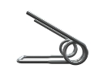
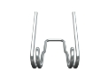
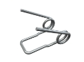

Пружины кручения
Изготовление винтовых пружин на заказ партиями от 1-й штуки за 1-3 дня.
Выполним по разнообразным параметрам, чертежам или образцу, фото, эскизам.
- 
- 
- 
ИЗГОТОВЛЕНИЕ И ПРОИЗВОДСТВО ПРУЖИН КРУЧЕНИЯ
Компания “Индустриал Спрингс” уже более 10 лет на рынке выпускает пружины кручения. Их применение достаточно распространено во многих сферах деятельности: мебельном, дверном производстве, в медицине и приборостроении. Мы изготавливаем пружины кручения в любом количестве и с различными характеристиками (цилиндрические со шлифованными торцами и поджатыми крайними витками, конические, спиральные, бочкообразные, манжетные, витые, торсионные).
Для создания продукта идеально соответствующего вашим требованиям мы используем высококачественные стали (углеродистые, легированные, специальные теплостойкие и нержавеющие),а также специализированное оборудование. “Индустриал Спрингс” проектирует и производит пружины кручения в Украине, придерживаясь нормам ГОСТа, сохраняя пружинящие свойства эксплуатационного продукта на долгий период.
Наша фирма занимается производством изделий из проволоки различных видов, от стандартных до сложнейших образцов. Пружины кручения можно купить у нас по оптовым и розничным ценам. При оформлении заявки на расчет и изготовление пружин кручения необходимо проконсультироваться с нашими специалистами, для точного составления технического задания к вашему заказу, где будут учтены все необходимые параметры: диаметр проволоки, диаметр и высота пружины, а также количество полных витков и материал. Для заказа достаточно связаться с менеджером нашей компании через форму заявки либо по телефону.